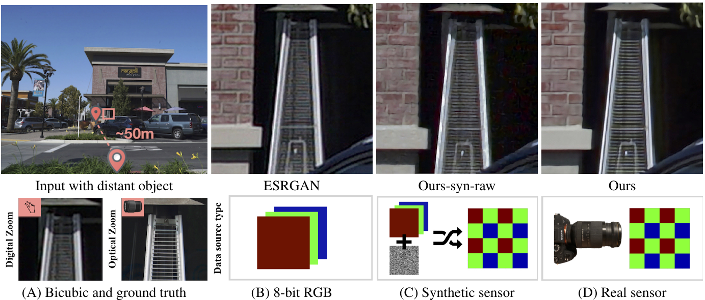
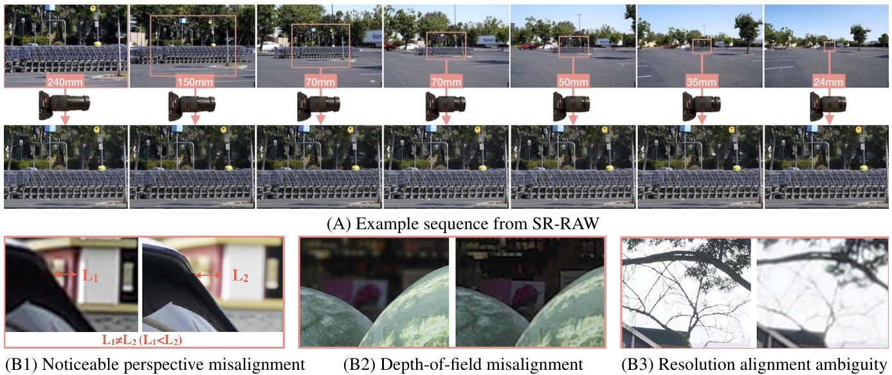
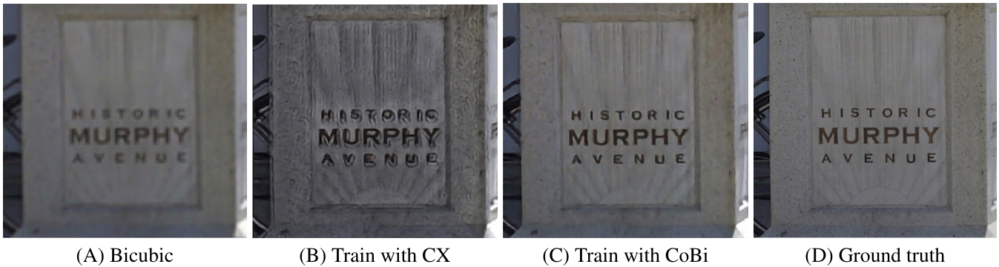
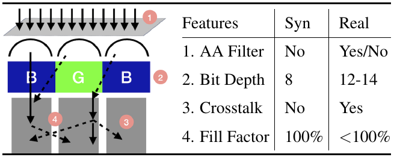
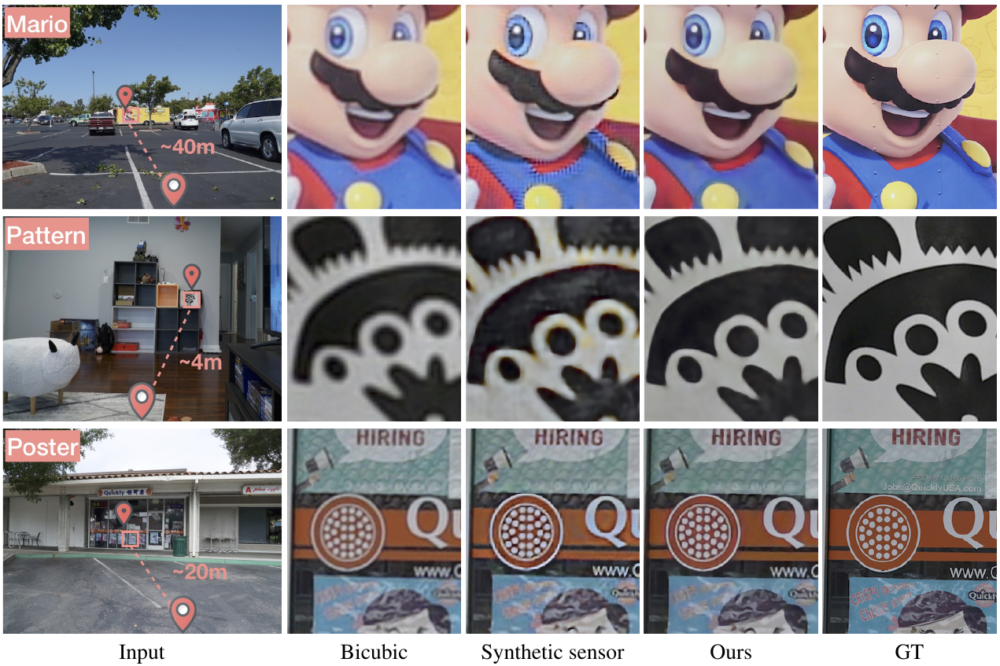
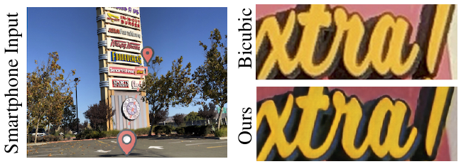

论文
Zoom to Learn, Learn to Zoom：从 Bayer RAW 直接超分，用光学变焦拍真值

1. 出发点 (Motivation)
2019 年的学习型超分（SRGAN、ESRGAN、LapSRN 等）几乎都在同一个人造设定里训练：拿一张高清 RGB，bicubic 下采样当输入，原图当真值。作者认为这个设定在两个地方和"真的拍远处物体"对不上 [§1]：
- 噪声被下采样洗掉了。 下采样会顺带平均掉噪声，所以合成输入很干净。真实场景里远处物体在画面中只占很少像素，进光量少，噪声反而更重。
- 输入已经是 ISP 的产物。 8-bit RGB 经过了相机 ISP 的降噪、锐化和色调映射，这些步骤为了"整张图好看"会丢掉 12–14 bit RAW 里的高频信号。超分网络拿到的是被抹过一遍的信号。
所以作者想让网络直接吃 RAW，把去马赛克、去噪、超分合成一个端到端模型（相当于一个"带超分的学习型 ISP"）。障碍是真值从哪来：RAW 没有对应的"高分辨率 RAW"。一种办法是从 RGB 合成 RAW（如 Gharbi 等的做法），但真实传感器噪声里有色彩串扰、填充因子、微透镜等效应，简单噪声模型模拟不出来 [§1, Fig. 4]。作者的答案是 "Zoom to Learn"：用变焦镜头的长焦端当真值，因为长焦镜头对窄视场采光，物理上就是光学放大。
Bayer RAW
传感器原始读数，每个像素只记录 R/G/B 中的一个颜色（RGGB 马赛克），通常 12–14 bit，线性、未降噪。
ISP
相机里把 RAW 变成 JPEG 的流水线：去马赛克、白平衡、降噪、色彩矩阵、gamma/色调映射、锐化、压缩。
计算变焦 / 数字变焦
不动镜头，只靠裁剪 + 放大得到"拉近"效果；本文就是让学到的模型替代 bicubic 放大。
光学变焦真值
同一场景用长焦端（如 150mm）拍的照片，当短焦端（35mm）照片放大 4 倍后的标准答案。
FOV 匹配
按焦距比从短焦图中裁出和长焦图同一视场的区域，让输入和真值看的是同一块场景。
ECC 对齐
Enhanced Correlation Coefficient，OpenCV 里一种迭代求几何变换（平移/旋转/仿射）的图像配准算法。
Contextual Loss (CX)
把两张图都看成"特征点的集合"，每个特征去对方集合里找最像的那个，不要求像素位置对齐。
CoBi
本文提出的 Contextual Bilateral loss：在 CX 的特征相似度上再加空间坐标项，让匹配优先找"附近"的特征。
LPIPS
用预训练网络特征衡量两张图的感知差异，越低越像。
2. 方法 (Method)
整个方法由三件事组成：一个数据集（SR-RAW）、一个吃 4 通道 RAW 的 ResNet、一个能容忍错位的损失（CoBi）。网络本身没有新东西，真正的贡献在数据和损失。
2.1 SR-RAW：用一支变焦镜头拍出真值
作者用 Sony FE 24–240mm 镜头，对每个场景依次拍 7 档焦距，共 500 组序列，室内外都有，ISO 100–400 [§3.1]。同一序列里任意两张都能组成一对训练样本：短焦的 RAW 当输入，长焦的 RGB（相机 JPEG） 当真值。比如 70mm 的 RGB 就是 35mm RAW 的 2X 真值。4X 模型每个序列能拿到 3 对，8X 模型只有 1 对；按 80/10/10 切成 400/50/50 序列 [§5]。

拍摄时的三个物理约束，正是后面要设计 CoBi 的原因 [§3.1]：
- 景深：焦距一变景深就变。作者统一用很小的光圈（至少 f/20）来压小景深差异，室内上三脚架长曝光。
- 曝光：整组用同一快门时间，保证噪声水平不随焦距变化；但机械快门和光圈仍造成可见的亮度/颜色波动，这也是不能用逐像素损失的理由之一。
- 视差：变焦时投影中心会移动。作者算过，这支镜头要离物体至少 56.4 米，相距 5 米的两个物体才能保证视差小于 1 像素。所以近景基本不拍，但数据里仍然留有视差。
预处理分两步 [§3.2]：先按 EXIF 焦距比匹配 FOV，再用 ECC 在 RGB-L 和 RGB-H 之间求几何变换来补偿手动变焦时的相机晃动。焦距标称值和目标倍率对不上时，再乘一个尺度修正（例如用 35mm/150mm 训 4X 时，修正系数 1.07）。
代码里 FOV 匹配就是按 EXIF 焦距比裁剪再缩放（repo/main_crop.py:L36-L56），几何对齐由 repo/main_align_camera.py 调 utils_align.align_ecc 完成。
这里有一个容易忽略的设计选择，写在 demo_rawrgb_pair.ipynb 的注释里：对齐时只变换目标 RGB，永远不重采样 RAW（"because we don't want to transform or sample the raw sensor"）。RAW 是马赛克，任何插值都会破坏 Bayer 结构和噪声统计，所以几何变换只施加在真值一侧。
2.2 输入：把 Bayer 打包成 4 通道，再接一个 SRResNet
网络输入是把每个 2×2 的 Bayer 块打包成 4 个通道，空间分辨率减半但信号不丢 [§5]；减黑电平后归一化到 [0,1]。白平衡不交给网络学，而是从 EXIF 读出来，作为后处理乘到网络输出上。
repo/utils.py:L154-L172 — 读 RAW、减黑电平归一化、把 RGGB 打包成 4 通道
def get_bayer(path, black_lv, white_lv):
try:
raw = rawpy.imread(path)
except:
return None
bayer = raw.raw_image_visible.astype(np.float32)
bayer = (bayer - black_lv)/ (white_lv - black_lv) #subtract the black level
return bayer
def reshape_raw(bayer):
bayer = np.expand_dims(bayer,axis=2)
bayer_shape = bayer.shape
H = bayer_shape[0]
W = bayer_shape[1]
reshaped = np.concatenate((bayer[0:H:2,0:W:2,:],
bayer[0:H:2,1:W:2,:],
bayer[1:H:2,1:W:2,:],
bayer[1:H:2,0:W:2,:]), axis=2)
return reshaped
通道顺序是 (0,0)、(0,1)、(1,1)、(1,0)，对 RGGB 传感器就是 R、G、B、G。黑白电平是按设备写死的（utils.py:L34-L44）：Sony 是 512/16383（14 bit），还有一组 iPhone 的 528/4367。这说明作者 §6.4 的 iPhoneX 微调实验确实走的是同一条 RAW 入口。
网络是一个 16 个残差块的 SRResNet，后面接 \(\log_2 N + 1\) 个上采样层 [§5]。多出来的那个"+1"是为了把打包时减掉的一半分辨率补回来：
—— 翻译：打包后的 RAW 只有原分辨率的一半；放大 $2^{\log_2 N+1} = 2N$ 倍之后，正好是原 Bayer 分辨率的 $N$ 倍。4X 模型需要 3 层 ×2 上采样，8X 需要 4 层。
repo/net.py:L135-L163 — 反卷积上采样分支：up_ratio=4 走 3 层、up_ratio=8 走 4 层，最后 9×9 卷积出 3 通道 RGB
elif up_type == 'deconv':
with tf.variable_scope('deconv_stage1'):
net = conv2(net, 3, 256, 1, scope='conv')
net = deconv2(net, 3, 256, 2)
net = prelu_tf(net)
with tf.variable_scope('deconv_stage2'):
net = conv2(net, 3, 256, 1, scope='conv')
net = deconv2(net, 3, 256, 2)
net = prelu_tf(net)
if up_ratio == 4:
with tf.variable_scope('deconv_stage3'):
net = conv2(net, 3, 256, 1, scope='conv')
net = deconv2(net, 3, 256, 2)
net = prelu_tf(net)
if up_ratio == 8:
with tf.variable_scope('deconv_stage3'):
net = conv2(net, 3, 256, 1, scope='conv')
net = deconv2(net, 3, 256, 2)
net = prelu_tf(net)
with tf.variable_scope('deconv_stage4'):
net = conv2(net, 3, 256, 1, scope='conv')
net = deconv2(net, 3, 256, 2)
net = prelu_tf(net)
with tf.variable_scope('deconv_output_stage'):
net = conv2(net, 9, gen_output_channels, 1, scope='conv')
代码和论文的公式对得上：config/inference.yaml 里 up_ratio: 4，正好走 stage1–3 共 3 层。
2.3 从 Contextual Loss 到 CoBi
为什么不能用 L1/L2？ 40–80 像素的错位下，逐像素损失会把"真值在左边 3 像素"和"真值在右边 3 像素"平均起来，学出来的就是糊图 [§4]。
Contextual Loss (CX) 的做法是不管位置：把输出图 \(P\) 看成特征集合 \(\{p_i\}_{i=1}^N\)，真值 \(Q\) 看成 \(\{q_j\}_{j=1}^M\)，每个 \(p_i\) 去 \(Q\) 里找距离最近的特征：
—— 翻译：输出里的每个小块都去真值里"找最像的那块"，只要找得到，在哪儿都行；损失就是这些最近距离的平均。
问题在于"在哪儿都行"太宽松了。作者发现用 CX 训练会在平坦墙面上出现周期性伪影（图 3B），统计后发现只有 43.7% 的目标特征被唯一一个源特征匹配上 [§4]，也就是说很多特征都去抢同一个"最像"的目标。
CoBi 借鉴双边滤波的思路，把空间坐标也算进距离：
—— 翻译：还是找最像的那块，但离得越远扣分越多，$w_s$ 决定"多远算远"。类比双边滤波：既看颜色像不像，也看位置近不近。论文说这把唯一匹配率从 43.7% 提到了 93.9%。
最终损失在两个特征空间上各算一次 CoBi [§4]：
—— 翻译：一项用 $n\times n$ 的原始 RGB 块当特征（4X 最优 $n=10$，8X 最优 $n=15$），管颜色和细节；另一项用 VGG-19 的 conv1_2/conv2_2/conv3_2 特征加余弦距离，管纹理和结构。$\lambda$ 的取值论文放在补充材料里。

2.4 CoBi 在代码里实际是怎么算的
损失本体在 CX/ 目录，从 Mechrez 等人的 contextual loss 官方实现改过来（README 原话）。和论文 Eq. 2 不同，代码不是"距离相加再取 min"，而是沿用了 CX 原论文的"归一化相似度"写法，然后在相似度空间里把特征项和空间项按 \(w_s\) 线性混合。
先看相似度怎么来。代码先把原始距离 \(d_{ij}\) 变成相对距离，再过一个指数核并归一化：
repo/CX/CSFlow.py:L100-L104 — 相对距离：每个 d_ij 除以该行的最小距离
def calc_relative_distances(self, axis=TensorAxis.C):
epsilon = 1e-3
div = tf.reduce_min(self.raw_distances, axis=axis, keepdims=True)
relative_dist = self.raw_distances / (div + epsilon)
return relative_dist
—— 翻译：先把"最近的那个"的距离当 1，其他按倍数算（$\tilde d$），然后用指数核把倍数变成相似度（`CSFlow.py:L14`），再归一化成和为 1 的分布。最像的那个分到最大的权重，其他按差距指数衰减。$h$ 在代码里是 nn_stretch_sigma = 0.5。
空间项是把每个位置的 (行, 列) 坐标当成 2 维"特征"，走同一套 L2 + 相对距离流程：
repo/CX/CSFlow.py:L115-L134 — 用坐标网格当特征构造空间相似度 cs_flow_sp，特征相似度 cs_flow 另算
def create(I_features, T_features, distance, nnsigma=float(1.0), b=float(1.0)):
# added spatial constraint, by having coordinates as additional feature maps
N,H,W,C=T_features.shape.as_list()
rows = tf.range(H)
cols = tf.range(W)
rows = tf.cast(rows, dtype=tf.float32)/(H) * 255.
cols = tf.cast(cols, dtype=tf.float32)/(W) * 255.
features_grid = tf.meshgrid(rows, cols)
features_grid = tf.concat([tf.expand_dims(features_grid_i, 2) for features_grid_i in features_grid], axis=2)
features_grid = tf.expand_dims(features_grid, axis=0)
features_grid = tf.tile(features_grid, multiples = tf.constant([N, 1, 1, 1]))
cs_flow_sp = CSFlow.create_using_L2(features_grid, features_grid, nnsigma, b)
if distance.value == enums.Distance.DotProduct.value:
cs_flow = CSFlow.create_using_dotP(I_features, T_features, nnsigma, b)
elif distance.value == enums.Distance.L2.value:
cs_flow = CSFlow.create_using_L2(I_features, T_features, nnsigma, b)
else:
raise "not supported distance " + distance.__str__()
return cs_flow,cs_flow_sp
然后在相似度上混合、取 max、取平均、取负对数：
repo/CX/CSFlow.py:L199-L220 — CoBi 的核心：cs_comb = (1−w_s)·特征相似度 + w_s·空间相似度
def CX_loss(T_features, I_features, distance=Distance.L2, nnsigma=float(1.0), w_spatial=0.1):
T_features = tf.convert_to_tensor(T_features, dtype=tf.float32)
I_features = tf.convert_to_tensor(I_features, dtype=tf.float32)
with tf.name_scope('CX'):
cs_flow, cs_flow_sp = CSFlow.create(I_features, T_features, distance, nnsigma)
# sum_normalize:
height_width_axis = [TensorAxis.H, TensorAxis.W]
# To:
cs = cs_flow.cs_NHWC
cs_sp = cs_flow_sp.cs_NHWC
cs_comb = cs * (1.-w_spatial) + cs_sp * w_spatial
k_max_NC = tf.reduce_max(cs_comb, axis=height_width_axis)
k_arg_max_NC = tf.argmax(tf.reshape(cs_comb, [tf.shape(cs_comb)[0], -1, tf.shape(cs_comb)[3]]), axis=1)
# k_max_NC_feature = tf.slice()
CS = tf.reduce_mean(k_max_NC, axis=[1])
CX_as_loss = 1 - CS
CX_loss = -tf.log(1 - CX_as_loss)
CX_loss = tf.reduce_mean(CX_loss)
return CX_loss,k_arg_max_NC
写成公式，代码实际优化的是：
—— 翻译：对每个目标特征 $j$，在所有源位置 $i$ 里找"特征相似度和空间相似度加权和"最高的那个，把这些最高分取平均，再取 $-\log$。分数越接近 1，损失越接近 0。
这里有一个论文没讲的事实。 空间项的输入是同一张坐标网格和它自己比，所以对每个位置 \(i\)，最近的"邻居"就是它自己，\(\min_k d^{\text{sp}}_{ik}=0\)。代入 L100–L104，其他所有位置的相对距离都是 \(d/10^{-3}\)。坐标被缩放到 0–255，L2 用的是平方距离（CSFlow.py:L49，没开根号），即使在最密的 63×63 网格上，相邻两格的平方距离也有 \((255/63)^2\approx 16.4\)，相对距离约 \(1.6\times 10^4\)，再过 \(\exp(-\cdot/0.5)\) 直接下溢成 0。也就是说：
—— 翻译：代码里的"空间相似度"实际上是一个单位矩阵：同位置得满分，隔一格就是 0。没有"越近越好"的平滑衰减。
所以代码版 CoBi 的真实含义是：位置完全相同的特征对额外加 \(w_s=0.1\) 分，其余情况退化回纯 CX。它确实做到了论文说的"优先本地、允许全局搜索"，但这里的"本地"是同一个像素位置，不是"附近一圈"。论文 Eq. 2 的 \(\mathbb{D}'\) 是按距离线性惩罚，代码里没有这件事。这也提供了一个解释 93.9% 唯一匹配率的视角：同位置加分本身就在鼓励一一对应。（这一段是按代码逐行推出来的；训练脚本没开源，我没法实测训练时的数值。）
再看 VGG 和 RGB 两项各自的配置：
repo/loss.py:L86-L105 — CoBi_VGG：conv1_2/conv2_2/conv3_2，余弦距离（DotProduct），w_spatial 默认 0.1
def compute_contextual_loss(input, output, reuse=False, w_spatial=0.1):
CX = edict()
CX.crop_quarters = False
CX.max_sampling_1d_size = 63
CX.feat_layers = {'conv1_2' : 1.0, 'conv2_2' : 1.0, 'conv3_2': 0.5}
CX.Dist = Distance.DotProduct # Distance.L2 # Distance.DotProduct
CX.nn_stretch_sigma = 0.5 #0.1
CX.w_spatial = w_spatial
features = list(CX.feat_layers.keys())
vgg_real=build_vgg19(input*255.0, features, reuse=reuse)
vgg_fake=build_vgg19(output*255.0, features, reuse=True)
CX_loss_list = []
for layer, w in CX.feat_layers.items():
CX_loss_i = CX_loss_helper(vgg_real[layer], vgg_fake[layer], CX)
CX_loss_list.append(w * CX_loss_i)
CX_loss = tf.reduce_sum(CX_loss_list)
return CX_loss
repo/loss.py:L107-L127 — CoBi_RGB：把 n×n 像素块展开成特征向量，用 L2 距离
def compute_patch_contextual_loss(input, output, reuse=False, patch_sz=5, rates=1, w_spatial=0.1):
CX = edict()
CX.crop_quarters = False
CX.max_sampling_1d_size = 63
CX.Dist = Distance.L2 # Distance.L2 # Distance.DotProduct
CX.nn_stretch_sigma = 0.5 #0.1
CX.w_spatial = w_spatial
# to have the same scale as the VGG features
input_patch = tf.extract_image_patches(input*255.0, ksizes=[1,patch_sz,patch_sz,1],
strides=[1,1,1,1],
rates=[1,rates,rates,1],
padding="SAME")
output_patch = tf.extract_image_patches(output*255.0, ksizes=[1,patch_sz,patch_sz,1],
strides=[1,1,1,1],
rates=[1,rates,rates,1],
padding="SAME")
CX_loss_i = CX_loss_helper(input_patch, output_patch, CX_config=CX)
CX_loss = tf.reduce_sum(CX_loss_i)
return CX_loss
两个细节：max_sampling_1d_size = 63 表示特征图大于 63×63 时会随机抽 3969 个位置再算（CX_helper.py:L94-L98），两张图用同一组下标，所以"同位置"的含义得以保留；patch_sz 默认是 5，而论文说 4X 最优 \(n=10\)，实际训练用的值要看未开源的训练脚本。
2.5 对照组：Ours-png 和 Ours-syn-raw
为了证明"增益来自 RAW"，作者训了两个同结构的对照模型 [§5.2]：
- Ours-png：输入换成短焦拍的 8-bit JPEG（注意是真实拍摄的低分辨率图，不是下采样的），真值不变。
- Ours-syn-raw：按 Gharbi 等的做法从白平衡 + gamma 后的 sRGB 合成 Bayer：每像素保留一个颜色，加上方差随机的高斯噪声；测试时把真实 RAW 也做白平衡 + gamma 后再喂进去。
代码里的合成器很简单，正好印证了论文"简单噪声模型不够"的论点：
repo/utils.py:L135-L151 — 合成 Bayer：按 RGGB 抽样 + 单一 i.i.d. 高斯噪声，σ ~ U(0, 0.0784)
def make_mosaic(im, mosaic_type='bayer'):
H, W=im.shape[:2]
mosaic=np.zeros((H, W))
mosaic[0:H:2, 0:W:2] = im[0:H:2, 0:W:2, 0]
mosaic[0:H:2, 1:W:2] = im[0:H:2, 1:W:2, 1]
mosaic[1:H:2, 0:W:2] = im[1:H:2, 0:W:2, 1]
mosaic[1:H:2, 1:W:2] = im[1:H:2, 1:W:2, 2]
return mosaic
def add_noise(im):
sz = im.shape
noise_level = np.random.rand(1)
noise_level *= 0.0784
noise_level += 0.0000
noise = noise_level*np.random.randn(sz[0], sz[1])
im += noise
return im, noise_level
噪声与信号无关（没有 shot noise 的泊松成分），而且加在 gamma 之后的非线性域里；0.0784 ≈ 20/255。这是一个相当弱的合成基线，后面 §5 会回到这一点。

3. 结论 (Key findings)
主表：真 RAW + 光学真值碾压所有 RGB 基线 [Table 1，SR-RAW 50 个测试序列]
| 方法 | 4X SSIM↑ | 4X PSNR↑ | 4X LPIPS↓ | 8X SSIM↑ | 8X PSNR↑ | 8X LPIPS↓ |
|---|---|---|---|---|---|---|
| Bicubic | 0.615 | 20.15 | 0.344 | 0.488 | 14.71 | 0.525 |
| SRGAN | 0.384 | 20.31 | 0.260 | 0.393 | 19.23 | 0.395 |
| SRResnet | 0.683 | 23.13 | 0.364 | 0.633 | 19.48 | 0.416 |
| LapSRN | 0.632 | 21.01 | 0.324 | 0.539 | 17.55 | 0.525 |
| Johnson et al. | 0.354 | 18.83 | 0.270 | 0.421 | 18.18 | 0.394 |
| ESRGAN | 0.603 | 22.12 | 0.311 | 0.662 | 20.68 | 0.416 |
| Ours | 0.781 | 26.88 | 0.190 | 0.779 | 24.73 | 0.311 |
- 4X：PSNR 比最好的基线（SRResnet 23.13）高 3.75 dB，LPIPS 比最好的基线（SRGAN 0.260）低 0.07。
- 8X：PSNR 比 ESRGAN 高 4.05 dB，LPIPS 从 0.394 降到 0.311。
- GAN 类方法（SRGAN、Johnson）SSIM 只有 0.35–0.39，比 bicubic 还低。作者的解释是它们把真实输入里的噪声当纹理放大了。
- 作者也试过在 SR-RAW 上按"bicubic 下采样"的标准设定微调基线，差异很小（SSIM < ±0.04，PSNR < ±0.05），所以表里直接用了公开预训练权重 [§5.1]。
受控实验：同一网络，只换输入数据 [Table 2]
| 输入 | 4X SSIM | 4X PSNR | 4X LPIPS | 8X SSIM | 8X PSNR | 8X LPIPS |
|---|---|---|---|---|---|---|
| Ours-png（真实 8-bit JPEG） | 0.589 | 22.34 | 0.305 | 0.638 | 21.21 | 0.584 |
| Ours-syn-raw（合成 Bayer） | 0.677 | 23.98 | 0.231 | 0.643 | 22.02 | 0.473 |
| Ours（真实 RAW） | 0.781 | 26.88 | 0.190 | 0.779 | 24.73 | 0.311 |
这张表才是全文最硬的证据：网络、损失、真值都一样，4X 下真 RAW 比 JPEG 输入高 4.54 dB，比合成 RAW 高 2.90 dB。合成 RAW 介于两者之间，说明"RAW 格式"本身有用，"真实传感器统计"又额外有用。

人类偏好 [Table 3，AMT 上 50 名受试者、100 张 4X 图（50 张有真值 + 50 张无真值）]：本文对 Syn-raw 胜率 80.6%，对 ESRGAN 83.4%，对 LapSRN 88.5%，对 Johnson 92.1%。
跨传感器 [§6.4]：额外拍 50 对 iPhoneX–单反数据，只微调 5000 步，就能让模型适配 iPhoneX 的 Bayer。论文只给了一张定性图，没有数字。

4. 实现细节 (Implementation notes)
- 训练脚本没开源。 README 写的是"full training pipeline is under preparation and will be released somewhere around October"，但截至我克隆的 commit（
8b1dcf6，2025-05）仓库里仍然只有推理、对齐预处理、白平衡计算和损失函数。所以 \(\lambda\)、\(w_s\) 的实际取值、两项 CoBi 怎么组合、学习率等都无法从代码核实。 - CoBi 空间项退化为同位置加分（§2.4 推导）：
repo/CX/CSFlow.py:L100-L104的相对距离 +L120-L126的 0–255 坐标网格 +L49的平方 L2，使得 \(\mathrm{CX}^{\text{sp}}\approx I\)。论文 Eq. 2 的 \(w_s\|\Delta xy\|_2\) 是距离线性惩罚，代码不是。这是最重要的一处论文–代码出入。 - 混合位置也不同：论文 Eq. 2 在距离上相加后取 min；代码
repo/CX/CSFlow.py:L210在归一化相似度上加权平均后取 max，再取 \(-\log\)（L216–L218）。两者不等价。 - 对齐模型不是论文写的 Euclidean：§3.2 说"Euclidean motion model（旋转 + 平移）"，但
repo/utils_align.py:L58实际用的是cv2.MOTION_AFFINE（6 自由度，含缩放和错切），MOTION_EUCLIDEAN在注释里。仿射能顺带吸收焦距标称值不准造成的尺度误差，可能正因如此才换的。 - 白平衡在 gamma 域里乘：
repo/inference.py:L115-L118把 EXIF 读出的 WB 增益开 1/2.2 次方后乘到网络输出上（蓝通道取out_wb[0,3]，对应 R-G-G-B 顺序的第 4 个）。这说明网络学的是"未白平衡、但已 gamma"的输出空间；WB 增益本身由repo/main_wb.py:L15-L28用 rawpy 分别开/关相机 WB 渲染两次、求通道均值比得到，作者自己的注释是"a hacky way"。 - 黑白电平按设备硬编码：
repo/utils.py:L34-L44，Sony 512/16383、iPhone 528/4367。换传感器必须自己补这张表，否则归一化就错了。 - 残差块第一层是 4×4 卷积：
repo/net.py:L77用的是kernel=4，第二层才是 3×3。偶数核在 SAME padding 下会有半像素不对称，论文没提。另外论文说"16-layer ResNet"，代码是 16 个残差块（每块 2 层卷积，net.py:L95-L97）。 - 推理裁边：
repo/inference.py:L40-L42在输出四周各裁掉raw_tol/2 × up_ratio × 4像素，作者注释说是边界伪影。 - 训练 patch 尺寸的出入：论文 §5 说"从全分辨率 Bayer 里随机裁 64×64"；notebook 示例里
crop_pair用patch_sz=512（RGB），对应打包 RAW 64×64（utils.py:L336），也就是 Bayer 128×128。两者差两倍，但 notebook 只是示例，以论文为准还是以代码为准无法判断。 - 未使用的辅助函数里有 bug：
repo/loss.py:L153-L185的compute_unalign_loss（平移搜索版 L1，论文未提）用tf.unravel_index(..., (tol, tol))解下标，但平移网格的大小是(2·tol/stride)²，维度对不上。它和learn_align（L16-L23）都没有被仓库其他地方调用。loss.py:L12还硬编码了作者本机的 VGG 权重路径。
5. 批判性总结 (Critical assessment)
Strengths
- 把"真值从哪来"变成了一个物理问题。 用长焦端当短焦端的真值，GT 来自真实光学而不是退化模型。这是后来 RealSR（realsr-2019，Cai et al., ICCV 2019）、DRealSR 等"同机变焦配对"数据集的直接先例。
- 受控实验干净。 Table 2 只换输入，把"RAW 的价值"和"真实传感器统计的价值"分开量化了。这比"我们的方法比别人好"更有信息量。
- 诚实面对错位。 没有假装预处理能对齐，而是量化了 40–80 像素的错位来源（Fig. 2），再从损失层面去容忍它。
- 颜色与纹理解耦。 WB 不交给网络学，直接从元数据施加，让网络把容量花在去马赛克/去噪/超分上。
Limitations / open questions
- 真值本身受衍射限制。 为了压景深差异，所有图都用 f/20 或更小光圈。按艾里斑直径 \(\approx 2.44\lambda N\)，\(\lambda=550\,\text{nm}\)、\(N=20\) 时约 27 µm，比常见全画幅传感器 4–6 µm 的像素间距大好几倍。也就是说"光学真值"本身就是被衍射软化过的，模型学到的上限是"f/20 的锐度"，不是镜头的最佳锐度。论文没讨论这一点。
- 真值是相机 JPEG，不是线性图像。 模型学到的映射里混进了 Sony 机内 ISP 的锐化、降噪、色调曲线和 JPEG 压缩。对"学某台相机的观感"来说这反而是想要的；但对"恢复物理细节"来说，部分"细节"可能是机内锐化造出来的。
- 评测在错位的 GT 上算 PSNR/SSIM。 作者说"所有方法共享同样的错位所以公平"，但错位会系统性压低所有方法的绝对值，并且偏向输出偏模糊的方法；GAN 类方法 SSIM 比 bicubic 还低，部分可能是错位惩罚，而不全是"放大了噪声"。
- 基线对比不完全对称。 基线要么用公开权重（在合成 bicubic 设定上训的），要么在 SR-RAW 上用 bicubic 下采样设定微调，都没有在真实的短焦–长焦 RGB 对上用 CoBi 训练。Ours-png 部分弥补了这一点（且 4X PSNR 22.34 反而低于 SRResnet 的 23.13），但"同样数据、同样损失、只是换成 SOTA 架构吃 RGB"这个对照缺失。
- 合成 RAW 基线偏弱。 合成器只有 i.i.d. 高斯噪声、加在 gamma 后的 sRGB 上，没有逆色彩矩阵、没有信号相关的 shot noise（
utils.py:L144-L151）。"合成 RAW 不如真 RAW"在这个强度的合成器上成立，不能直接推广到更真实的合成管线（见下表 unprocessing-2018）。 - 单相机、单镜头、静态场景。 一台 Sony 机身 + 一支镜头；ISO 只有 100–400，没有低光；拍摄需要远景 + 三脚架，动态物体几乎不可能入库。跨传感器只有一张定性图（§6.4）。
- 8X 表里有一些反常值没解释。 ESRGAN 的 SSIM 在 8X（0.662）比 4X（0.603）还高；Ours-png 8X 的 LPIPS（0.584）比 bicubic（0.525）还差。
- CoBi 的空间项与论文描述不一致（§4 第 2、3 条），而且训练代码缺失，论文报告的 43.7%→93.9% 唯一匹配率无法独立复现。
When to use / not use
- 适合：手里有能拍"更好光学"的设备（长焦、更大传感器的相机）并且能拍静态远景配对；想端到端从 RAW 出图；能接受 SRResNet 级别的小模型。
- 不适合：动态场景；需要恢复超出输入带宽的真实细节（单帧方法只能靠先验"补"，远处树叶这类目标会被平滑或幻想化）；需要精确颜色保真（模型继承了 GT 相机的 JPEG 观感）。
延伸阅读 (Further reading)
交叉验证比较：挑 4 篇和本文的核心主张（"真 RAW 输入 + 真实配对真值 + 容忍错位"）直接对话的工作：
| 工作 | 核心结论 | 关键观察 | 与本文的异 / 同 |
|---|---|---|---|
| 本文 | 真 RAW 输入 + 光学变焦 GT 训出的 SR 显著优于 RGB/合成 RAW | 同网络 4X：真 RAW 比 JPEG 高 4.54 dB，比合成 RAW 高 2.90 dB；错位 40–80 px | — |
| dped-2017 | 手机照片可以学到单反观感（同场景双机配对） | 双机同步拍摄，错位靠 SIFT 配准 + 裁块；用模糊后的颜色损失 + 灰度纹理 GAN 来回避逐像素损失 | 同：都承认跨设备配对必然错位，都避开严格的逐像素损失。异：DPED 吃手机 JPEG（RGB），不做超分；本文吃 RAW、做变焦 |
| pynet-2020 | 一个网络可以直接替代手机 ISP（华为 P20 RAW → 佳能 5D IV RGB） | Zurich RAW-to-RGB 数据集；配准后多尺度金字塔逐级训练，用 L2/VGG/MS-SSIM 组合 | 同：RAW 进、目标相机 RGB 出，本质是学习型 ISP。异：同尺度不做超分，配准更精细后仍以像素/感知损失为主，没有 CX 类损失 |
| unprocessing-2018 | 把 sRGB "逆 ISP" 回线性 RAW 并加 shot+read 噪声，只用合成数据就能在真实 RAW 去噪基准上很强 | 逆 tone/gamma/CCM/WB/马赛克，噪声模型与信号相关 | 异（直接矛盾）：本文说"合成 RAW 明显不如真 RAW"；Unprocessing 说"足够真实的合成 RAW 够用"。见下方成因 |
| handheld-mfsr-2019 | 多帧手持 RAW 可以真实地超出单帧分辨率，并顺带替代去马赛克 | 利用手抖造成的亚像素位移做核回归融合，已在 Pixel 3 Super Res Zoom 落地 | 同：都从 RAW 出发、都针对手机变焦。异：多帧提供真实新信息，本文单帧只能靠学到的先验补细节 |
分歧成因：本文和 Unprocessing 对"合成 RAW 够不够用"的结论相反，主要差在合成器的保真度和任务。本文的合成器只有 gamma 域里的 i.i.d. 高斯噪声，既没有逆色彩矩阵和 tone curve，也没有信号相关的 shot noise；Unprocessing 逐级逆向了 ISP，并按真实传感器标定噪声参数。任务也不同：去噪只需要建模噪声；超分 + 去马赛克还要建模串扰、AA 滤镜、填充因子这些空间结构（Fig. 4），这些恰好是简单合成管线最难覆盖的。所以更准确的说法是：粗糙的合成 RAW 不够用；精细合成是否够用于 RAW 超分，本文没有回答。
相关工作
- diffusion-sr-2026：生成式真实超分的调研。本文是"真实配对数据 + 判别式小网络"路线的起点，那边是"合成退化 + 大生成先验"路线，两者在"细节是恢复还是生成"上立场不同。
6. 研究启发 (Transferable takeaways)
这一节针对专项「手机照片 → 相机画质：细节与质感迁移」（目标：iPhone 照片，最好从 Bayer RAW 出发，在细节和质感上变成某台目标相机的效果；颜色用 DNG 色彩矩阵 / 色卡做物理对齐，生成模型只补高频纹理，多帧合成提供真实信息）。
1. RAW 入口值多少，这篇给了受控数字
同一网络 + 同一 GT，只把输入从 8-bit JPEG 换成真 RAW，4X 下 +4.54 dB PSNR、LPIPS 0.305→0.190（Table 2）。这是"优先从 Bayer RAW 出发"最直接的量化依据。iPhone 侧要注意：作者 README 建议用 Halide 这类 App 存 Bayer DNG；Apple ProRAW 是已经去马赛克的线性 DNG，不是 Bayer，不能直接套用 4 通道打包。黑白电平也得按设备标（代码里 iPhone 是 528/4367）。
2. "用更好的光学拍真值"可以直接改成"用目标相机拍真值"
§6.4 已经做了 iPhoneX→单反 50 对 + 5000 步微调，输入和 GT 来自不同设备。迁移到本专项：iPhone RAW 当输入、目标相机同场景同视角当 GT，就是一个"跨设备 SR-RAW"。50 对就能把一个预训练模型拉到新传感器上，说明配对数据量不必很大；更划算的做法可能是先在 SR-RAW 这类同机数据上预训，再用少量跨设备对微调。
3. CoBi 能吸收错位，但不能代替粗对齐
跨设备配对的错位只会比变焦镜头更大（两颗镜头光心不同，视差更大）。CoBi 的价值是容忍剩下的几十像素误差。但从代码看，它的空间项实际是"同位置加 0.1 分"，非常依赖预对齐后大部分特征已经大致落在原位；README 也说预对齐能明显加速收敛。实操上：先做 FOV 匹配 + 仿射/单应配准（只变换 GT，不碰 RAW），再用 CX/CoBi 处理残差。如果想要论文 Eq. 2 那种"按距离衰减"的效果，需要自己改实现（例如去掉空间项的相对距离归一化）。
4. 颜色剥离给物理，网络只学空间结构
本文把 WB 从网络里拿出来、按 EXIF 后处理施加（inference.py:L115-L118），作者也提到机械快门/光圈导致的亮度和颜色波动是不用像素损失的原因之一。这和专项"颜色用 DNG 色彩矩阵 / 色卡对齐"的思路一致，而且可以做得更彻底：GT 先用色卡或 CCM 对齐到手机输入的色彩空间，再训练，让损失只看纹理和细节。否则网络会把两台机器的色差当成"细节"去拟合。
5. 反直觉点：真值也有衍射上限
为了让景深一致，SR-RAW 全部用 f/20 以上光圈拍，艾里斑约 27 µm，远大于像素间距，所以"光学真值"本身被衍射软化了。专项讨论过"远处树叶受衍射极限限制"：这篇说明 GT 侧也有衍射上限，而且拍 GT 时的光圈选择会直接决定模型能学到的锐度上限。给目标相机拍 GT 时，应在景深够用的前提下选该镜头的最佳光圈（通常 f/5.6–f/8），不要为了省事一律缩到很小。
6. 单帧学习 vs 多帧真实信息：要分工
本文是单帧方法，远处树叶这种低于输入带宽的细节只能由 CoBi/VGG 引导网络"补"出统计上合理的纹理。和专项的思路对应：多帧合成（如 handheld-mfsr-2019）负责提供真实的亚像素信息，生成模型只补剩下的高频质感。本文的 RAW 入口和配对采集方案可以用在"多帧融合结果 → 目标相机观感"这一段，而不是指望单帧网络承担全部细节恢复。